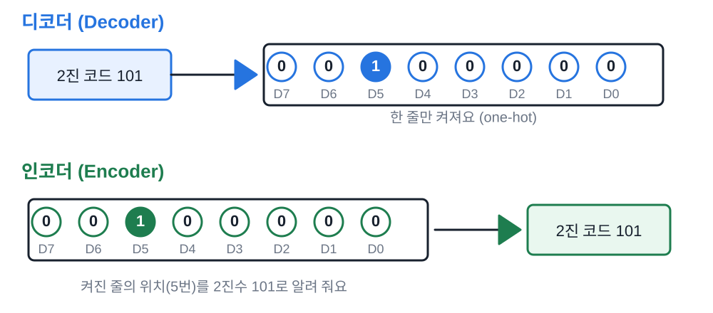
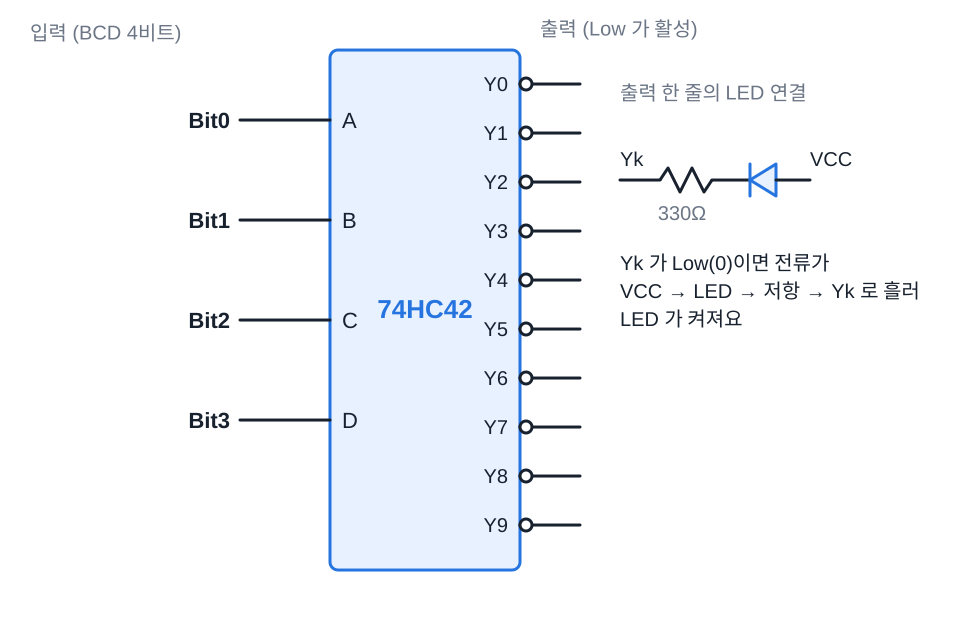
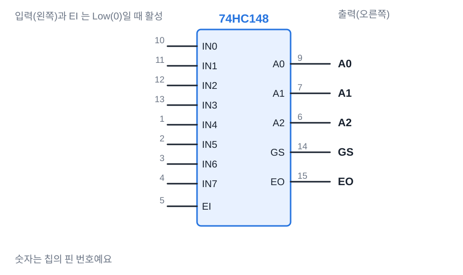

실험 5 · Decoder & Encoder — 코드와 켜진 줄을 서로 바꿔요 · 실험 설명
이번 학기 교안 기준
실험 이해
왜 이 회로를 쓰는지 먼저 알아봐요
이해를 위한 예시 · 회로가 해결하는 문제
이해를 위한 예시로, 세 비트로 받은 번호에 맞춰 여덟 장치 중 하나를 선택하고 싶다고 해 봐요. 코드 101 자체는 세 선의 값일 뿐, “5번 장치만 선택”이라는 개별 신호는 아니에요. 반대로 여덟 입력 중 어느 하나가 활성화됐는지를 세 비트 번호로 전달하고 싶을 수도 있어요.
디코더는 이진 코드를 개별 선택선으로 바꾸고, 인코더는 활성화된 입력의 위치를 이진 코드로 바꿔요. 이 예시의 일반 인코더는 입력이 정확히 하나만 활성화됐다는 조건이 필요해요. 여러 입력이 동시에 활성화될 수 있으면 우선순위를 정하는 인코더가 필요해요.
활성 High인 이상적인 3×8 디코더에 101을 넣으면 D5만 1이고 나머지는 0이에요. 반대로 활성 High인 8×3 인코더에서 D5만 1이면 101을 내보내요. “활성”은 선택됐다는 뜻이고, 실제 칩에서는 선택 신호가 0일 수도 있어요.
이번 수행에서는 74HC42에 BCD 숫자를 넣어 해당 출력만 선택되는지 보고, 십진 입력을 Excess-3 코드로 바꾸는 인코더도 확인해요. 74HC42·74HC148은 Active Low라서 0을 활성으로 읽어요. 위 활성 High 예시와 구분해요. Excess-3는 숫자에 3을 더해 표현하는 이번 실험의 특정 코드이며 모든 인코더가 내보내는 코드는 아니에요.

디코더와 인코더는 서로 반대 방향이에요. 한 줄만 켜진 신호를 one-hot이라고 불러요.
이 순서로 읽어 봐요
0과 1, 게이트, 이진수 읽는 법부터 다시 확인해요. 그다음 디코더, BCD→십진 디코더(74HC42), 인코더, 우선순위 인코더(74HC148), Excess-3 코드 순서로 가요. 디코더로 디멀티플렉서를 만드는 연결 문제와 실험 항목별 정리는 마지막에 있어요.
이번 보고서 수행 범위는 9월 14일 공지의 실험 1-2(BCD to Decimal Decoder)와 2-2(Decimal to Excess-3 Code Encoder)예요. 교안의 1-1(2×4 디코더)과 2-1(8×3 우선순위 인코더)은 이번에 직접 하지 않는 보충이에요. 하지 않는다고 시험에 나오지 않는다는 뜻은 아니에요.
예상값과 측정값을 구분해요
여기서 구한 출력은 이상적인 회로의 예상값이에요. 실제로 측정한 값은 실험에서 따로 기록해야 해요. 이 자료에는 실제 측정 수치를 적지 않았어요.
디코더는 코드→선택선, 인코더는 활성 입력 위치→코드로 바꿔요. 일반 인코더는 정확히 한 입력 활성 조건이며 동시 입력에는 우선순위가 필요해요. 활성 High 이상 예시와 Low 활성 실제 74HC42·74HC148을 구분해요. Excess-3는 특정 코드(숫자+3)예요. 수행은 1-2 BCD·2-2 Excess-3이며 1-1·2-1은 보충으로 시험 제외를 뜻하지 않아요. 여기 값은 예상이며 실제 측정 수치는 없어요.
0·1, 게이트와 이진수를 다시 읽어요
0과 1, 그리고 게이트를 다시 읽어요
5V 전원으로 하는 실험이라서 +5V에 연결하면 1(High), GND에 연결하면 0(Low)로 읽어요. 스위치는 둘 중 하나에 연결해서 입력을 0이나 1로 정해요.
AND는 두 입력이 모두 1일 때만 1이에요. OR는 하나라도 1이면 1이에요. NOT은 0과 1을 뒤집어요. NAND는 AND의 결과를 한 번 뒤집어요.
A
B
A·B (AND)
A+B (OR)
(A·B)′ (NAND)
0
0
0
0
1
0
1
0
1
1
1
0
0
1
1
1
1
1
1
0
이진수는 자리마다 무게가 달라요
세 비트 A2A1A0에서 A2는 4, A1은 2, A0은 1의 무게를 가져요. 그래서 101은 4+0+1=5예요. 비트 순서는 왼쪽이 큰 자리(MSB)이고 오른쪽이 작은 자리(LSB)예요.
A2
A1
A0
십진수
0
0
0
0
0
0
1
1
0
1
0
2
0
1
1
3
1
0
0
4
1
0
1
5
1
1
0
6
1
1
1
7
진리표의 한 행은 입력을 동시에 정했을 때의 출력이에요. 입력이 n개면 2ⁿ가지 행이 있어요.
여러 줄 중 딱 한 줄만 1인 신호를 one-hot이라고 불러요. 디코더의 출력과 인코더의 입력이 바로 one-hot이에요.
“켜졌다”가 꼭 1은 아니에요
Active High는 신호가 1일 때 켜졌다(선택됐다)고 읽는 방식이에요. Active Low는 0일 때 켜졌다고 읽는 방식이에요. 교안은 Active Low를 Negative Logic이라고 불러요.
이번 실험의 74HC42와 74HC148은 Active Low예요. 그래서 “선택된 출력이 0”이에요. LED가 켜지는 조건은 결선 방향에 따라 달라요.
진리표의 X는 don’t-care예요. 그 입력이 0이든 1이든 결론이 같다는 뜻이고, 알 수 없는 값과는 달라요.
A2A1A0는 4·2·1 무게, 왼쪽이 MSB예요. AND는 모두 1·OR는 하나라도 1·NOT은 반전·NAND는 AND 반전이에요. one-hot은 한 줄만 1인 신호예요. High 활성은 1·Low 활성은 0에서 선택되며 74HC42·74HC148의 극성과 LED 결선 방향을 구분해요. 표의 입력 X는 미정값이 아닌 don’t-care예요.
디코더는 코드에 맞는 한 줄만 켜요
주소를 받으면 그 번호의 전등 하나만 켜요
디코더는 n비트 이진 코드를 받아서 2ⁿ개의 출력 중 그 코드가 가리키는 한 줄만 켜는 회로예요. 입력 n개, 출력 m개인 디코더를 “n×m 디코더”라고 불러요.
메모리 주소를 해석하거나 I/O 장치 중 하나를 고를 때처럼 “입력된 이진 정보로 한 가지 출력을 활성화”하는 상황에 써요.
2×4 디코더를 게이트로 만들어요
입력 A1A0가 00, 01, 10, 11이면 출력 D0, D1, D2, D3 중 같은 번호 하나만 1이에요. 각 출력은 그 입력 조합 하나만 1로 만드는 AND예요.
NOT 2개와 2입력 AND 4개로 만들어요. 선이 만나는 곳의 점은 접속, 점 없는 교차는 접속하지 않아요.
A1
A0
D3
D2
D1
D0
0
0
0
0
0
1
0
1
0
0
1
0
1
0
0
1
0
0
1
1
1
0
0
0
3×8 디코더도 같은 방식이에요. 입력이 A2A1A0이면 출력 Dk는 A2A1A0가 k를 이진수로 쓴 값일 때만 1이에요. NOT 3개와 3입력 AND 8개가 필요해요.
A2A1A0
D7 D6 D5 D4 D3 D2 D1 D0 (왼쪽이 D7)
000
0000 0001
001
0000 0010
010
0000 0100
011
0000 1000
100
0001 0000
101
0010 0000
110
0100 0000
111
1000 0000
A2A1A0=110을 넣어 볼게요. D6=A2·A1·A0′이라서 1·1·1=1이에요. 다른 일곱 출력은 적어도 한 입력이 맞지 않아서 0이에요.
출력 이름과 그림의 순서를 확인해요
교안 실험 1-1 그림은 D3가 맨 위, D0가 맨 아래에 있어요. 이 자료의 그림은 D0가 맨 위예요. 출력 이름이 입력 코드의 십진수와 같다는 의미는 같아요.
여기서는 켜진 출력이 1인 Active High 디코더를 다뤄요. 실험에서 쓰는 74HC42는 선택된 출력이 0이에요. 다음 토픽에서 이어서 볼게요.
한 단계만 풀어 봐요
A1A0=10을 2×4 디코더에 넣으면 어느 AND 출력이 1이 될까요?
힌트
A1=1, A0=0이에요. 어느 AND가 A1과 A0′를 받는지 찾아봐요.
연습 답
D2=A1·A0′가 1·1=1이에요. 10은 십진수 2이고, 나머지 출력 D0, D1, D3은 0이에요.
활성 High 이상 디코더는 n비트 주소가 가리키는 Dk만 1로 만들어요. 각 출력은 해당 주소의 AND(minterm)이며 2×4는 NOT2·2입력 AND4, 3×8은 NOT3·3입력 AND8이에요. 그림의 위아래 순서보다 출력 이름을 확인해요. 실제 74HC42는 선택 출력이 0이므로 이 모델과 구분해요.
BCD to Decimal 디코더(74HC42)를 배워요
BCD 숫자 하나를 열 개의 줄 중 하나로 바꿔요
BCD는 십진수 한 자리를 4비트 이진수로 쓴 코드예요. 0000부터 1001까지가 0부터 9를 뜻해요. BCD to Decimal 디코더는 이 4비트를 받아서 0번부터 9번 중 해당 번호 한 줄만 활성화해요.
74HC42는 선택된 출력이 Low예요
실험 1-2는 스위치 네 개로 Bit0~Bit3을 정하고 74HC42의 입력 A, B, C, D에 넣어요. A가 Bit0(LSB), D가 Bit3(MSB)예요. 출력 Y0~Y9는 Active Low라서 선택된 줄만 0이고 나머지 아홉 줄은 1이에요.

Bit0이 A, Bit3이 D예요. 출력은 선택된 줄만 Low예요.
Bit3 Bit2 Bit1 Bit0
십진수
Low가 되는 출력
0000
0
Y0
0001
1
Y1
0010
2
Y2
0011
3
Y3
0100
4
Y4
0101
5
Y5
0110
6
Y6
0111
7
Y7
1000
8
Y8
1001
9
Y9
교안은 “Output을 Negative Logic으로 구축한다”고 해요. LED의 + 쪽을 VCC에 연결하고 − 쪽을 저항(330Ω)을 거쳐 Yk에 연결해요. Yk가 0이면 VCC에서 LED와 저항을 지나 Yk로 전류가 흘러서 LED가 켜져요. Yk가 1이면 양쪽 전압이 같아서 꺼져요.
따라서 예상 관찰은 이래요. Bit3~Bit0을 0000부터 1001까지 바꾸면 번호와 같은 LED 하나만 켜져요. 1010~1111처럼 BCD가 아닌 코드에서는 일반적으로 열 출력이 모두 1이라서 LED가 모두 꺼져요. 이 부분은 실제 측정으로 확인해야 해요.
디코더 이름과 LED 켜짐을 헷갈리지 않아요
교안은 이 회로를 “4×16 Decoder”라고도 불러요. 입력은 4비트지만 BCD라서 10개 출력만 써요.
출력값이 0인 줄이 선택된 줄이에요. LED 방향 때문에 “출력 0 → LED 켜짐”이 돼요. LED 켜짐을 출력 1이라고 쓰면 안 돼요.
한 단계만 풀어 봐요
Bit3 Bit2 Bit1 Bit0이 0111일 때 어느 출력이 Low이고 어느 LED가 켜질까요?
힌트
0111을 십진수로 읽어요.
연습 답
0111은 4+2+1=7이에요. Y7만 0이고 7번 LED가 켜져요. 나머지 아홉 출력은 1이에요.
BCD는 십진 한 자리 0–9를 0000–1001로 나타내요. 74HC42의 Bit0=A(LSB)·Bit3=D(MSB), Y0–Y9 중 선택된 줄만 Low이고 나머지는 High예요. VCC→LED→330Ω→Yk 결선에서는 출력 0일 때 LED가 켜져요. 교안의 4×16 명칭과 달리 BCD용 출력은 10개예요. 비BCD 1010–1111에서 모두 High·LED OFF는 일반적인 예상이며 실제 측정으로 확인해요.
인코더는 켜진 줄의 번호를 코드로 바꿔요
켜진 줄의 번호를 2진 코드로 알려 줘요
인코더는 2ⁿ개의 입력 중 하나가 활성화되면 그 위치를 n비트 이진 코드로 바꿔요. 입력 m개, 출력 n개인 인코더를 “m×n 인코더”라고 불러요.
키보드에서 어느 키가 눌렸는지를 이진 코드로 바꾸거나 CPU가 어느 장치의 인터럽트인지 식별할 때처럼 “정보를 요약하거나 식별”하는 데 써요.
일반 인코더는 한 줄만 켜진다고 가정해요. D1과 D2가 동시에 1이면 8×3 식에서 A1=1, A0=1이라서 011이 나와요. 1도 2도 아닌 3을 뜻하는 코드예요. 교안도 “여러 입력이 동시에 HIGH일 때 문제 발생, 우선순위 설정이 필요하다”고 말해요.
또 D0만 켜졌을 때와 아무 줄도 켜지지 않았을 때 모두 출력이 000이에요. 일반 인코더만으로는 이 두 상황을 구분할 수 없어요.
한 단계만 풀어 봐요
8×3 인코더에서 D1과 D4가 동시에 1이면 A2A1A0는 무엇일까요?
힌트
A2, A1, A0 식에 각각 D1과 D4가 들어 있는지 확인해요.
연습 답
A2=D4+…=1, A1=D2+D3+D6+D7=0, A0=D1+…=1이라서 101이에요. 이는 5를 뜻해서 D1도 D4도 아닌 값이 나와요.
일반 활성 High 인코더는 정확히 한 입력 Dk만 1일 때 그 번호를 이진 코드로 내요. 각 비트는 그 비트가 1인 번호들의 OR이며 4×2는 A=D2+D3, B=D1+D3예요. 지정 NAND 구현은 “그 선만 켜짐” 항의 반전을 NAND로 다시 합쳐 OR를 만들어요(NOT4·4입력 NAND3·2입력 NAND2). 여러 입력의 동시 1은 잘못된 번호를 낼 수 있어 우선순위가 필요해요. D0만 활성과 무입력은 둘 다 000이라 일반 인코더만으로 구분 못 해요.
우선순위 인코더와 74HC148을 배워요
여러 줄이 켜지면 순서가 높은 줄이 이겨요
우선순위 인코더(Priority Encoder)는 여러 입력이 동시에 활성일 때 우선순위가 가장 높은 입력의 번호만 코드로 내보내요. 줄 서는 순서가 정해져 있어서 동시에 눌려도 한 번호만 정해져요.
8×3 우선순위 인코더 74HC148은 Active Low예요
교안 실험 2-1은 74HC148을 써요. 입력 IN0~IN7과 EI(enable 입력)는 Low일 때 활성이에요. 출력 A2A1A0도 반전된 값이에요. 교안은 해석하기 쉽게 출력을 Negative Logic으로 구축해서 LED가 눈으로 읽는 숫자를 보여 줘요.

입력과 EI는 Low가 활성이에요. 숫자는 핀 번호예요.
교안 p11의 표를 따라가 볼게요. EI=H이면 입력과 상관없이 A2A1A0=HHH예요. EI=L에서 IN7이 L이면 나머지 입력은 X(상관없음)이고 A2A1A0=LLL이에요. IN7=H, IN6=L이면 A2A1A0=LLH예요. IN7=H, IN6=H, IN5=L이면 LHL이에요. 일반적으로 Low인 입력 중 번호가 가장 큰 입력이 우선이고, 출력은 그 번호의 이진수를 비트마다 뒤집은 값이에요.
EI
가장 큰 Low 입력
A2 A1 A0 (칩 출력)
LED2 LED1 LED0 (교안)
H
(무시)
H H H
L L L
L
IN7
L L L
H H H (7)
L
IN6
L L H
H H L (6)
L
IN5
L H L
H L H (5)
예를 들어 IN5가 L이고 IN7, IN6이 H이면 칩 출력은 LHL이에요. 이진수로 뒤집으면 101=5라서 5번이 눌린 걸 알 수 있어요.
74HC148에는 출력이 두 개 더 있어요. 퀴즈 자료에서는 GS를 Priority Flag Output, EO를 Enable Output이라고 불러요. 일반적인 74HC148 설명으로는 GS는 EI가 Low이고 하나 이상의 입력이 Low일 때 Low가 되고, EO는 EI가 Low이고 모든 입력이 High일 때 Low가 돼요. 이 저장소에는 74HC148 데이터시트가 없어서 이 부분은 일반 설명 기준의 보충이에요.
우선순위 방향과 반전을 같이 확인해요
74HC148에서는 번호가 큰 입력(IN7)이 우선이에요. 교안 p11의 표가 이를 보여 줘요. 퀴즈 해설 자료에는 “IN0가 가장 높은 우선순위”라고 쓴 문장이 있지만, 같은 해설의 예(6번 L, 7번 H일 때 LLH)와 교안 p11 표에는 맞지 않아요. 이 자료는 교안 표를 기준으로 해요.
IN0만 Low일 때와 모든 입력이 High일 때 모두 A2A1A0=HHH예요. 두 경우를 구분하려면 GS 같은 다른 출력이 필요해요.
일반 문제에서 8비트 입력을 D7…D0 순서로 적는다면 가장 왼쪽 1이 우선이라고 읽어요. 이 규칙은 위 교안 표의 IN7 우선과 같은 방향이에요.
한 단계만 풀어 봐요
8×3 우선순위 인코더(Active High)에 D7…D0=0011 1010을 넣으면 출력 A2A1A0는 무엇일까요? 번호가 큰 입력이 우선이에요.
힌트
왼쪽에서부터 처음으로 1이 나오는 자리를 찾아요.
연습 답
0011 1010에서 가장 왼쪽 1은 D5예요. 5의 이진수는 101이라서 A2A1A0=101이에요.
우선순위 인코더는 동시 활성 중 높은 순위 하나의 번호만 내요. 74HC148은 EI·입력이 Low 활성, IN7 우선이며 출력 A2A1A0는 선택 번호의 반전 코드예요. EI=H이면 HHH, IN0만 Low와 무입력도 HHH라 다른 출력으로 구별해야 해요. GS는 EI=L·입력 하나 이상 L에서 L, EO는 EI=L·모든 입력 H에서 L이라는 설명은 데이터시트가 없는 일반 보충이에요. “IN0 우선” 해설 문장과 충돌해 교안 표를 기준으로 하며, High 활성 일반 예시와 IC 극성을 섞지 않아요.
Excess-3 코드와 인코더를 배워요
BCD에 3을 더한 코드예요
Excess-3 코드는 십진수 한 자리를 BCD로 쓰고 거기에 0011(3)을 더한 코드예요. 0은 0011, 1은 0100이에요.
9의 보수가 비트 반전으로 나와요
십진수 d의 Excess-3 코드는 d+3의 4비트 이진수예요. 0부터 9까지는 다음과 같아요.
십진수
BCD
Excess-3
0
0000
0011
1
0001
0100
2
0010
0101
3
0011
0110
4
0100
0111
5
0101
1000
6
0110
1001
7
0111
1010
8
1000
1011
9
1001
1100
이제 Excess-3 코드를 비트마다 뒤집어 볼게요.
십진수 d
Excess-3
비트 반전
반전한 코드를 Excess-3로 읽은 수
9−d
0
0011
1100
9
9
1
0100
1011
8
8
2
0101
1010
7
7
3
0110
1001
6
6
4
0111
1000
5
5
5
1000
0111
4
4
6
1001
0110
3
3
7
1010
0101
2
2
8
1011
0100
1
1
9
1100
0011
0
0
표를 보면 어떤 숫자의 Excess-3 코드를 비트마다 뒤집으면 9에서 그 수를 뺀 값(9의 보수)의 Excess-3 코드가 돼요. 그래서 감산에 편리해요. 또 어느 숫자도 0000으로 표현되지 않아요. 가장 작은 코드가 0011이라서 모든 비트가 0인 상태를 “코드 없음”이나 신호 끊김과 구별할 수 있어요.
비트를 뒤집으면 9의 보수가 된다는 점은 표로 확인했어요. “반올림에 유용하다”는 퀴즈 답안의 설명은 여기서 확인하지 않았어요.
실험 2-2: 십진수 0~5를 Excess-3로 바꿔요
실험 회로의 입력은 D0~D5 여섯 개예요. 스위치 한 개를 1로 두면 그 숫자의 Excess-3 코드가 A3A2A1A0에 나와요. 먼저 표로 비트별 식을 구해요.
십진 한 자리의 Excess-3=BCD+3이고 비트 반전은 9의 보수 코드가 되어 감산에 편리해요. 유효 코드에는 0000이 없고 “반올림에 유용”은 여기서 확인하지 않았어요. 실제 회로는 D0–D5 중 정확히 한 입력만 1인 숫자 0–5용이며 6–9는 만들 수 없어요. A3=D5, A2=D1+D2+D3+D4, A1=D0+D3+D4, A0=D0+D2+D4예요. 반전 입력 NAND가 OR를 만들고 남는 입력은 VCC=1에 묶어요. 무입력 0000과 숫자0(D0=1)의 0011을 구분하며 동시 입력은 OR 결과라 +3 규칙을 보장하지 않아요.
디코더로 디멀티플렉서를 만들어요
디코더에 데이터 입력 하나를 더하면 디멀티플렉서예요
디코더는 입력 코드에 맞는 한 출력을 1로 만들어요. 디멀티플렉서(DMUX)는 선택선이 고른 출력 하나에 데이터 D를 그대로 실어 보내요. 고르지 않은 출력은 0이에요.
AND를 2입력에서 3입력으로 바꿔요
2×4 디코더의 각 AND에 데이터 D를 하나 더 넣으면 1×4 디멀티플렉서가 돼요. 선택선은 S1S0이고 출력은 Y0~Y3이에요.
디코더는 입력 신호가 “주소”이고 DMUX는 선택선이 “경로 선택”이에요. 선택선은 데이터를 나르지 않아요. 데이터는 D가 나르고, 어느 출력으로 갈지는 S1S0이 정해요.
이 토픽은 실험 4(MUX & DMUX)와 이어져요. 이번 실험에서 직접 만들지는 않아요.
한 단계만 풀어 봐요
S1S0=10, D=1일 때 Y3Y2Y1Y0는 무엇일까요?
힌트
10은 십진수 2예요. 어느 출력 식이 S1·S0′·D인지 봐요.
연습 답
Y2=S1·S0′·D=1이고 나머지는 0이라서 Y3Y2Y1Y0=0100이에요.
활성 High AND형 디코더의 각 AND에 데이터 D를 더 곱하면 Yk=D·주소조건인 DMUX예요. D=1이면 디코더와 같고 D=0이면 모두 0이에요. 데이터는 D·목적지는 S1S0가 정하며 선택선이 데이터를 나르지 않아요. 실험4와 이어지는 보충으로 이번에 직접 만들지는 않아요.
실험에서 바꾸고 관찰할 것을 정리해요
무엇을 바꾸고 무엇을 볼지 정리해요
모든 항목은 같은 순서예요. 스위치를 바꾸고, 출력을 보고, 왜 그런 출력이 나오는지 식이나 표와 맞춰 봐요.
실험 준비물과 항목별 정리
준비물은 5V 전압원, IC 74HC04·74HC08·74HC20(2개)·74HC42·74HC148, LED 10개, 저항 330Ω 10개예요.
항목
이번 수행
바꾸는 것
볼 것 (예상)
이유
1-1 2×4 디코더
보충
스위치 A1, A0
네 출력 중 입력 번호 하나만 1
D0~D3은 입력 조합 하나만 1로 만드는 AND
1-2 BCD to Decimal
수행
Bit3~Bit0을 0000~1001
번호와 같은 LED 하나만 켜짐 (Y가 Low)
74HC42가 Active Low이고 LED를 VCC 쪽에 연결
2-1 8×3 우선순위
보충
IN0~IN7 (Low=활성)
가장 큰 번호의 이진수를 뒤집은 값
74HC148은 Active Low이고 IN7이 우선
2-2 Decimal to Excess-3
수행
스위치 D0~D5를 한 개씩
숫자+3의 4비트 코드
A3=D5, A2=D1+D2+D3+D4, A1=D0+D3+D4, A0=D0+D2+D4
실험 1-2에서는 1010~1111도 한 번씩 넣어 보면 BCD가 아닌 코드에서 어떻게 되는지 볼 수 있어요. 이 결과는 예상으로 적고 측정은 실험 기록으로 확인해요.
실험 2-2에서는 스위치를 하나씩만 켜고 표와 맞춰 봐요. 아무것도 켜지 않은 상태(0000)와 D1·D2를 동시에 켠 상태(0101)를 관찰하면 인코더의 한계를 확인할 수 있어요.
예상과 측정이 다르면 먼저 연결을 확인해요
LED가 반대로 켜지면 LED 방향이나 Active Low 연결을 확인해요. 74HC20 NAND의 남는 입력을 띄워 두면 값이 정해지지 않아서 결과가 흔들릴 수 있어요. 남는 입력은 VCC에 연결해야 해요.
이 자료의 값은 이상적인 예상값이에요. 실제 측정값은 실험 기록에 따로 적어요.
수행은 1-2·2-2이고 1-1·2-1은 보충이에요. 74HC42는 0000–1001에서 해당 출력이 Low·VCC쪽 LED가 켜지는지, Excess-3는 D0–D5를 하나씩 켜 숫자+3인지 확인해요. 무입력 0000·D1/D2 동시 0101도 인코더 한계 관찰이에요. 남는 NAND 입력은 VCC에 묶고 LED 방향·활성 Low 결선을 확인해요. 비BCD 1010–1111도 예상과 실제 관찰을 대조하며 모든 실제 측정값은 별도 기록해요.